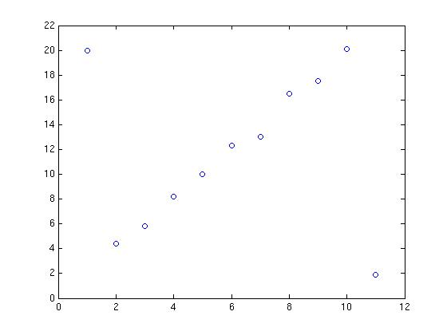
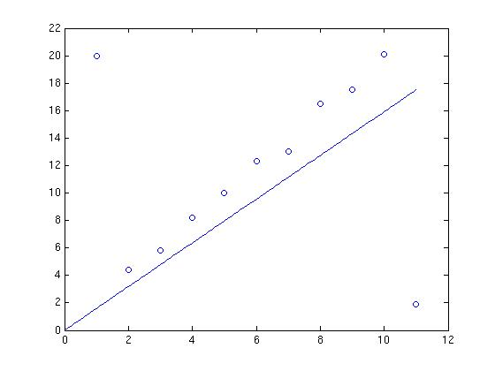

$\newcommand{\ones}{\mathbf 1}$
Unconstrained Least-Squares
In practical applications of least-squares polynomial fitting, it is always best to use the highest-order polynomial that is computationally feasible.
True
Incorrect.
False
Correct!
Least-squares approximate solution of overdetermined equations
is a method to find an exact solution of $Ax=y$
Incorrect.
Ax=y may not have an exact solution
is most useful when $A$ is square.
Incorrect.
is a method for computing $A^{−1}$ that avoids numerical instability.
Incorrect.
is a method for finding a value of $x$ that minimizes $\|Ax−y\|$.
Correct!
Suppose $y=Ax+v$, where $x \in \mathbb{R}^n$ is some set of parameters you wish to estimate, $y \in \mathbb{R}^m$ is a set of measurements, and $v$ represents a noise. We assume $m>n$. Consider an estimator of the form $\hat{x} = By$.
Choosing $B$ to be any left inverse of $A$ yields $\hat{x} = x$, matter what x is, provided $v=0$.
✓
✗
This option is correct.
The choice $B=(A^TA)^{−1}A^T$ yields $\hat{x}=x$, provided $v$ is small.
✓
✗
This option is incorrect.
The choice $B=(A^TA)^{−1}A^T$ yields $\hat{x}$ that is closest to $x$
✓
✗
This option is incorrect.
The choice $B=(A^TA)^{−1}A^T$ yields $\hat{x}$ that minimizes norm of $Ax - y$.
✓
✗
This option is correct.
Submit
Least-Squares Data Fitting
Least-squares function fitting works well for interpolation, but should never be used for extrapolation.
True
Incorrect.
False
Correct!
Consider the image

. If we do a least-squares fit of a straight line to these points, will it be a good fit?
Yes
Incorrect.
The fit looks like

As we can see, the outliers noticeably influence the slope of the fit.
No
Correct!
The fit looks like
As we can see, the outliers noticeably influence the slope of the fit.
Regularization
Regularized least-squares, i.e., choosing $x$ to minimize $\|Ax−y\|^2 + \mu\|x\|^2, \text{with } \mu > 0$
can always be done, even when A is not wide.
Correct!
fails when A is not skinny.
Incorrect.
requires only that A is nonzero.
Incorrect.
Suppose that $x$ minimizes $J_1(x) + \mu J_2(x)$, for some value of $\mu > 0$, but you'd like to find a point with a smaller value of $J_2$, if possible. You should
decrease the parameter $\mu$ and minimize $J_1+\mu J_2$.
Incorrect.
increase the parameter $\mu$ and minimize $J_1+\mu J_2$.
Correct!
minimize $J_1 + (1/\mu)J_2$.
Incorrect.
minimize $J_1 − \mu J_2$.
Incorrect.